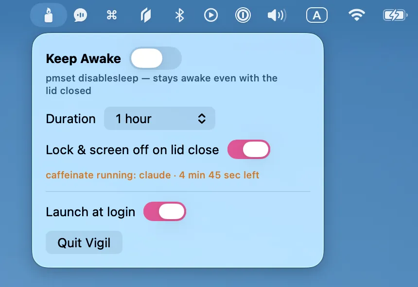

自動オフタイマー
15 分〜12 時間、または無期限。時間が来たらスリープは自動で復帰。
Vigil はふたを閉じた Mac をスリープさせないメニューバーアプリ。AI エージェントや長時間ジョブを夜通し走らせておけます。時間が来れば、スリープは自動で元どおり。

15 分〜12 時間、または無期限。時間が来たらスリープは自動で復帰。
閉じた瞬間に画面オフ&ロック。処理はそのまま動き続けます。
終了時は必ず元どおり。落ちても次回起動時に後始末します。
pmset -a disablesleep 限定の sudoers ルールを任意で。